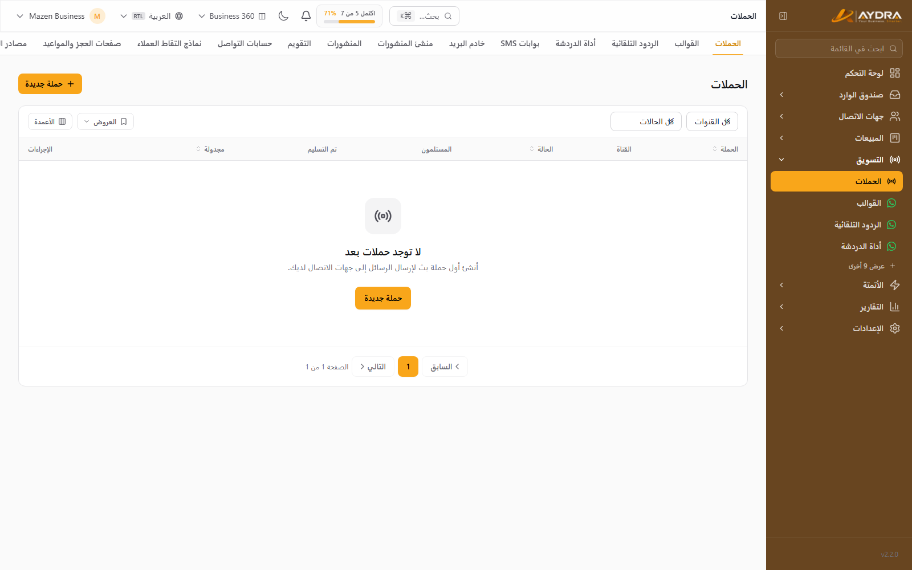
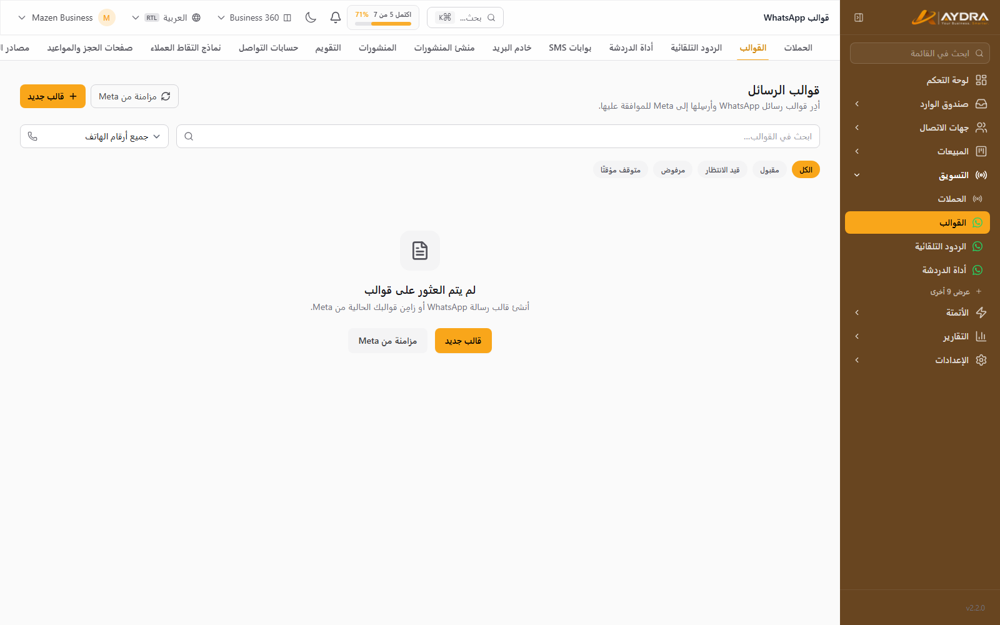
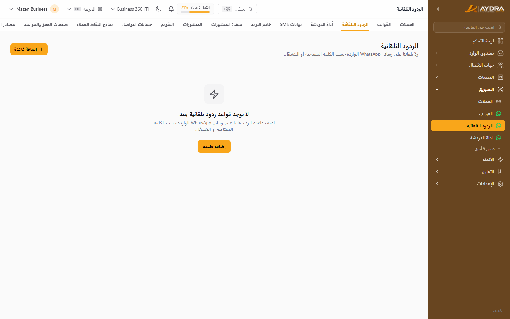
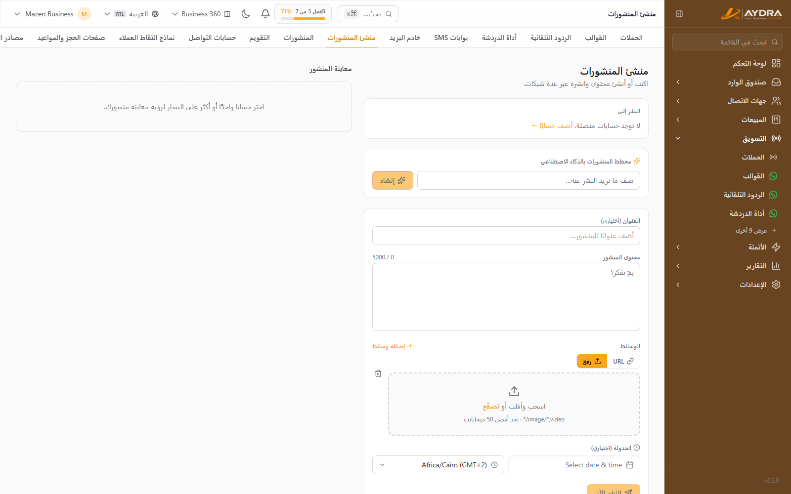
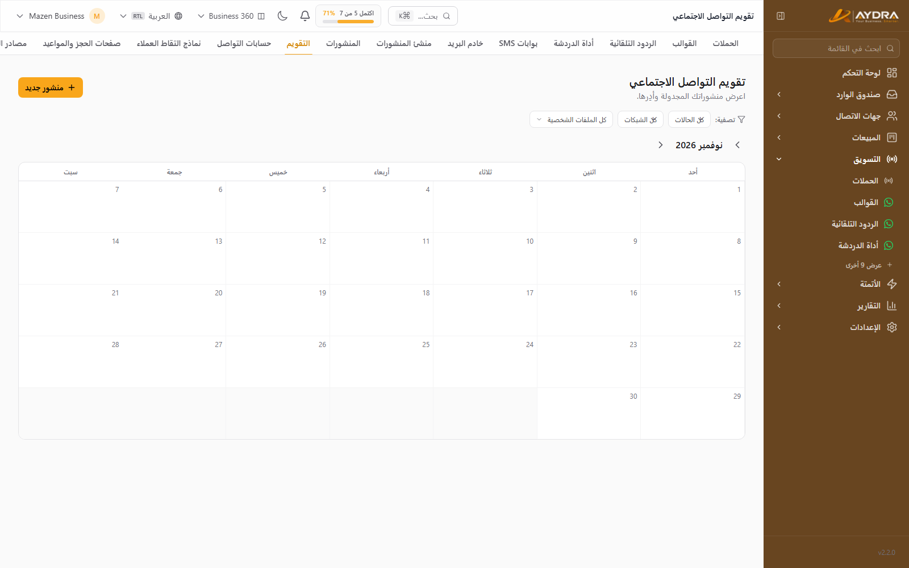

التسويق والحملات والسوشيال
كل أدوات الوصول للعميل في مكان واحد: حملات واتساب والـSMS والبريد، القوالب، الردود التلقائية، الشات ويدجت، النشر على السوشيال، النماذج، وصفحات الحجز.
1. الحملات (Campaigns)

من التسويق ← الحملات. الحملة تُرسل رسالة واحدة لقائمة محددة عبر قناة واحدة.
إنشاء حملة
- اضغط حملة جديدة واختر القناة: WhatsApp أو SMS أو Email.
- اختر الجمهور: كل جهات الاتصال، أو شريحة، أو وسم، أو قائمة مخصصة.
- صمّم المحتوى حسب القناة:
- WhatsApp: اختر قالبًا معتمدًا ورقم الإرسال.
- SMS: اكتب النص (وراجع عدد الأحرف والرصيد).
- Email: الموضوع، النص، الـFrom، والـReply-To.
- راجع المعاينة والجمهور المتوقع.
- أرسل الآن أو جدول الحملة لوقت لاحق.
على واتساب لا يمكن بدء محادثة بنص حر. لازم قالب معتمد، وإلا سترفض Meta الحملة. جهّز القالب قبل يوم من الحملة.
متابعة الحملة
من صفحة الحملة ترى: عدد المستهدفين، المُرسل، الفاشل، والمقروء (حسب القناة)، مع تقرير تفصيلي وتصدير المستلمين.
2. قوالب واتساب

من التسويق ← قوالب واتساب.
- اضغط قالب جديد واختر التصنيف (Marketing / Utility / Authentication).
- اكتب الرأس والنص والفوتر والأزرار.
- أضف المتغيرات مثل
{{1}}للاسم. - أرسل للاعتماد من Meta.
- راجع الحالة: معتمد / قيد المراجعة / مرفوض.
بعد الربط يمكنك مزامنة القوالب من صفحة إعداد القنوات لسحب كل قوالب WABA.
3. الردود التلقائية (Auto Replies)

من التسويق ← الردود التلقائية. ردّ فوري على كلمات مفتاحية دون تدخل بشري.
- أنشئ ردًا جديدًا.
- حدّد الكلمات أو العبارات المشغّلة.
- اكتب الرد (نص أو قالب).
- فعّله. يمكن تعطيله في أي وقت دون حذف.
استخدم الردود التلقائية للأسئلة المتكررة (الأسعار، المواعيد، العنوان). وللأتمتة المعقدة استخدم الأتمتة.
4. الشات ويدجت (Chat Widget)
زر محادثة يُضمَّن في موقعك ويفتح واتساب أو نموذجًا. من التسويق ← الشات ويدجت.
- أنشئ ويدجت واختر القناة والرقم.
- خصّص النص واللون والموضع.
- انسخ كود التضمين وضعه في موقعك قبل
</body>. - راجع زر المعاينة للتأكد من الشكل.
5. الرسائل النصية والبريد
الضبط يتم من:
- التسويق ← بوابات SMS — اختر المزوّد وأدخل المفاتيح وSender ID.
- التسويق ← سيرفر البريد — SMTP وFrom.
التفاصيل خطوة بخطوة في دليل التكاملات.
6. السوشيال ميديا
ربط الحسابات
من التسويق ← حسابات السوشيال. الشبكات المدعومة:
| الشبكة | ملاحظة |
|---|---|
| صفحة يديرها حسابك | |
| حساب تجاري مرتبط بصفحة Facebook | |
| حساب شخصي أو صفحة شركة حسب الصلاحية | |
| X (Twitter) | تسجيل دخول OAuth |
| YouTube | رفع/نشر فيديو |
| TikTok | نشر فيديو |
- اضغط ربط حساب واختر الشبكة.
- سجّل الدخول ووافق على الصلاحيات.
- اختر الصفحة/الحساب.
- تأكد من ظهور الحالة «متصل».
منشئ المنشورات (Composer)

- اكتب النص.
- أضف صورة أو فيديو.
- اختر الشبكات (يمكن النشر على أكثر من شبكة).
- عاين المحتوى لكل شبكة — الحدود تختلف (مثلًا X أقصر).
- انشر الآن أو جدول.
المنشورات والتقويم

- المنشورات: مسودات، مجدولة، منشورة، وفاشلة.
- التقويم: عرض شهري لكل ما سيُنشر.
- مخطط AI: يقترح أفكارًا ومواعيد نشر (يستهلك توكنز).
- المنشور الفاشل يعرض السبب — غالبًا انتهاء صلاحية توكن الشبكة؛ أعد ربط الحساب.
7. النماذج (Forms)
من التسويق ← النماذج (ميزة Forms).
- أنشئ نموذجًا وافتح المنشئ.
- أضف الحقول (نص، اختيار، بريد، هاتف…).
- اربط النموذج بمصدر ليد (Lead Source) لتتبّع الحملة.
- احفظ وانشر — يصبح متاحًا على
/f/{slug}. - ضمّنه في موقعك عبر كود الـEmbed إن أردت.
كل إرسال ينشئ ليدًا ويظهر في تحليلات النموذج. عدد النماذج والإرسالات محدود بالباقة.
8. صفحات الحجز (Booking Pages)
من التسويق ← الحجز (ميزة Booking).
- أنشئ نوع اجتماع (Meeting Type): المدة، الوصف، السعر إن وجب.
- اضبط أوقات الإتاحة والمنطقة الزمنية.
- شارك رابط الحجز
/b/{slug}. - العميل يختار الموعد ويؤكد.
- يمكنه إعادة الجدولة أو الإلغاء من رابط التأكيد.
تظهر الحجوزات في نفس الشاشة، ويمكن ربط الحجز بمشغّل أتمتة أو إرسال تذكير.
9. مصادر الليدز
من التسويق ← مصادر الليدز. أنشئ مصدرًا (مثل «حملة فيسبوك») واحصل على رابط/توكن UTM لتمييز الليدز القادمة منه. يستخدمها تقرير Attribution لمعرفة أفضل قناة.
حدود يجب معرفتها
| المورد | Free | Starter | Pro | Business |
|---|---|---|---|---|
| رسائل واتساب/شهر | 100 | 2,000 | 20,000 | 100,000 |
| SMS/شهر | 0 | 500 | 10,000 | 50,000 |
| بريد/شهر | 100 | 2,000 | 25,000 | 100,000 |
| حملات/شهر | 1 | 10 | 30 | 100 |
| منشورات سوشيال/شهر | 10 | 30 | 200 | 1,000 |
أخطاء شائعة
| المشكلة | السبب | الحل |
|---|---|---|
| الحملة لا تُرسل | قالب غير معتمد أو قناة غير متصلة | راجع القالب وحالة القناة |
| عدد المستلمين صفر | الشريحة/الوسم لا يحتوي أحدًا | راجع الشريحة أو اختر جمهورًا آخر |
| منشور سوشيال فاشل | توكن منتهٍ أو صلاحية ناقصة | أعد ربط الحساب وامنح الصلاحيات |
| الويدجت لا يظهر | الكود في المكان الخطأ أو CSP | ضعه قبل </body> وراجع سياسة الموقع |
| نموذج لا ينشئ ليدز | مصدر اليد أو الحقول الإلزامية | راجع إعدادات النموذج والـLead Source |
| «وصلت لحد الرسائل» | تجاوز حد الشهر | الرسائل السابقة تعمل، لكن الإرسال الجديد يتوقف — رقّي الباقة |
الخطوة التالية: أتمت المتابعة تلقائيًا من دليل الأتمتة والذكاء الاصطناعي.